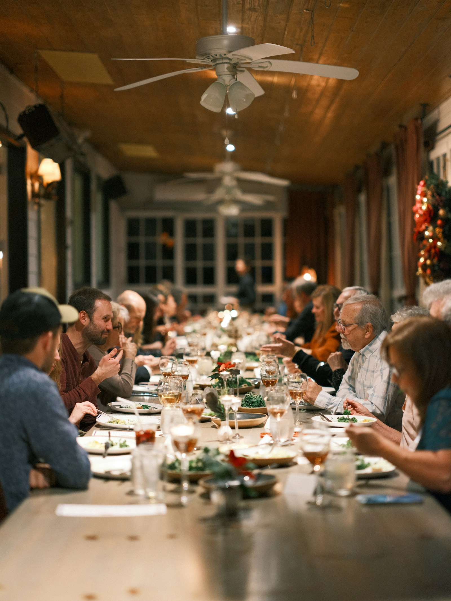
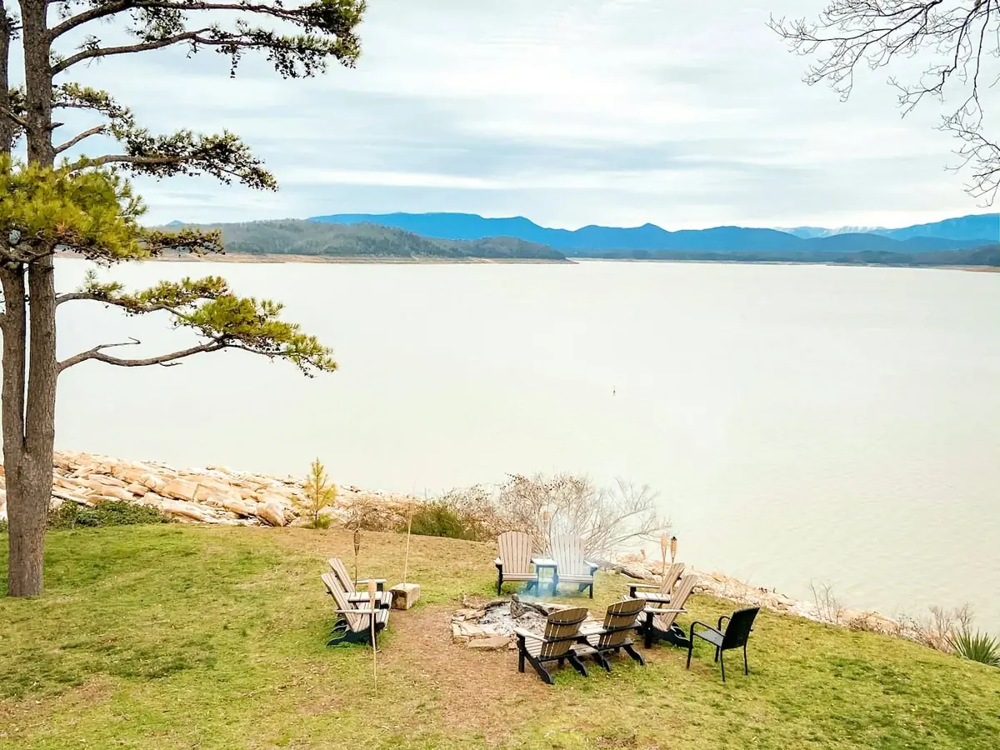

.jpeg)
February 2027
Founding invitations begin · Planned
ABN Experiences
Curated, invitation-only gatherings for senior pastors and ministry leaders. Small rooms, no stage, nothing performed.


ABN / The Shepherd’s Roundtable
The Network’s signature experience: a private, invitation-only gathering that meets quarterly, with 8–12 leaders in each session. Inaugural gathering: June 2027 · planned.
Discover the RoundtableABN / Leadership Dinners
Intimate, off-the-record evenings for a hand-picked group of 8–12 leaders, held in private dining rooms in select cities. No agenda. A shared table. First planned dinner: Atlanta, Georgia.
Receive experience updates
ABN / Leadership Retreats
The work goes somewhere else: a retreat away from pulpits and platforms, with conversation-led sessions and real rest. Inaugural retreat planned for Q3 2027.
Receive experience updatesUpcoming events
All dates are planned, not yet held. Details are shared with invited leaders.
Founding invitations begin · Planned
Inaugural Shepherd’s Roundtable · Planned
Atlanta Leadership Dinner · Planned
Inaugural Leadership Retreat · Planned
Nationwide
Atlanta · Chicago · Dallas · Houston · Los Angeles · Miami · New York · Phoenix · Washington D.C. · Charlotte · Nashville · Denver
Cities under consideration. Locations are shared after membership is confirmed.